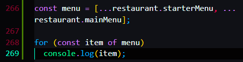

Using Materials:


ES6
For of loop


Getting the index of every item.
Have to use method: entries()
Which will create an array for every Element, and first element of each array is the index, and the second element is the element itself


You can also use destructuring here